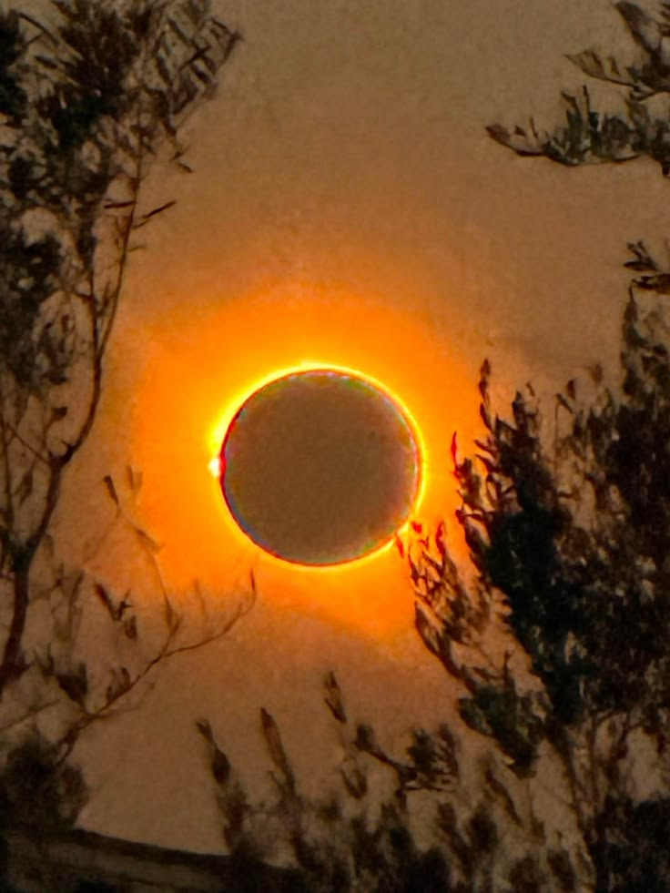

Who Was Thales of Miletus?
Thales of Miletus was an early Greek philosopher from the Ionian city of Miletus, on the western coast of Asia Minor in what is now Turkey. He appears to have lived around the beginning of the sixth century BCE and is traditionally regarded as one of the earliest figures in the Greek philosophical tradition. Later ancient writers, especially Aristotle, treated him as an important starting point for the Pre-Socratic investigation of nature. :contentReference[oaicite:0]{index=0}
No writings that can securely be attributed to Thales have survived, and nearly everything known about his philosophical views comes from later reports. This makes it difficult to determine precisely what he taught or how he expressed his ideas. Nevertheless, Aristotle clearly associates Thales with the search for a fundamental principle capable of explaining the natural world and its processes of change. :contentReference[oaicite:1]{index=1}
Thales is especially remembered for the claim that water is the fundamental principle, or archê, of nature. Aristotle reports this doctrine while discussing earlier philosophers who sought the causes and principles of existing things. The precise meaning of Thales's claim remains a matter of interpretation, however, because the surviving evidence is brief and filtered through later philosophical vocabulary. :contentReference[oaicite:2]{index=2}
His importance, therefore, does not rest only on the particular answer he gave. Thales represents an early attempt to ask what the world is fundamentally made of and whether the diversity of natural phenomena could be understood through an underlying principle. This concern with nature, origin, and change became central to the thinkers who followed him, including other philosophers associated with Miletus. :contentReference[oaicite:3]{index=3}
It is therefore misleading to imagine that Thales simply replaced myth with modern scientific method. Greek philosophical thought developed gradually and remained connected to the intellectual world of its time. Yet the tradition surrounding Thales marks an important development: the effort to explain the order of nature through a principle within nature itself, rather than relying solely on accounts of external divine intervention. :contentReference[oaicite:4]{index=4}
Thales of Miletus: Quick Facts
- Name — Thales of Miletus
- Era — Sixth century BCE
- From — Miletus, an Ionian Greek city in Asia Minor
- Philosophical tradition — Pre-Socratic and Milesian philosophy
- Known for — Natural philosophy, cosmology, astronomy, mathematics, and the search for an archê
- Fundamental principle associated with him — Water
- Surviving writings — No writings of Thales survive
- Associated thinkers — Anaximander and Anaximenes
- Historical importance — One of the earliest Greek thinkers traditionally associated with explaining nature through rational inquiry
Historical Context: Thales and Ancient Ionia

Thales lived in Miletus, one of the important Greek cities of ancient Ionia on the western coast of Asia Minor. Its position connected it with the wider Aegean and eastern Mediterranean world, while trade and travel also brought Ionians into contact with older cultures of Egypt and the Near East. The intellectual environment in which early Greek philosophy developed was therefore not isolated, but formed within a wider world of practical knowledge, observation, calculation, and cultural exchange.
This wider background is important when considering the development of early philosophy. Mathematical techniques, astronomical observations, systems of measurement, and traditions concerning the origins of the cosmos already existed in several ancient civilizations. The distinctive achievement associated with the Milesian thinkers was not the creation of knowledge from nothing, but the development of new forms of inquiry into the causes and principles of the natural world.
Greek culture also possessed rich poetic and religious traditions for explaining the origins and structure of the cosmos. Thinkers such as Thales became associated with a different kind of question: what is the world fundamentally made of, how does change occur, and what principle might account for the order and diversity of nature? These questions did not immediately eliminate myth or religion, but they encouraged explanations focused increasingly on the nature of the world itself.
The Milesian tradition is usually associated with Thales, Anaximander, and Anaximenes, all of whom were connected with Miletus. Ancient accounts sometimes presented them as members of a direct succession, although the precise historical relationship between them is uncertain. What is clear is that their surviving doctrines share an interest in physis, the natural world, and in identifying principles capable of explaining the origin, structure, and transformation of things. :contentReference[oaicite:1]{index=1}
This does not mean that Thales suddenly created science in the modern sense. Ancient natural inquiry did not employ modern experimental methods, institutional sciences, or the precise distinction between philosophy and science familiar today. Thales' historical importance lies instead in the kind of problem later tradition associated with him: the attempt to seek intelligible explanations of nature through principles and causes rather than merely recounting inherited stories. :contentReference[oaicite:2]{index=2}
Why Is Thales of Miletus Important?
Thales is important because later Greek philosophers placed him near the beginning of a distinctive tradition of inquiry into physis, or nature. Aristotle, in particular, treated him as an early thinker who sought causes and principles capable of explaining the natural world. Although our evidence for Thales himself is limited, this Aristotelian interpretation strongly influenced the place he came to occupy in the history of philosophy. :contentReference[oaicite:3]{index=3}
The significance of this approach is greater than the particular answer traditionally associated with him. Thales became famous for identifying water as a fundamental principle, but the deeper philosophical importance lies in the search for an underlying source behind the changing diversity of experience. Instead of treating each phenomenon as entirely separate, such inquiry asks whether many things might ultimately be connected by a more basic reality.
In this sense, Thales helped establish a question that would remain central to philosophy: What is the fundamental reality behind the things we observe? Later thinkers gave very different answers. Some proposed other material principles, while others developed increasingly complex accounts of being, change, mind, form, matter, and causation.
His importance also lies in the fact that the Milesian thinkers did not sharply separate what we would now call scientific and philosophical questions. Questions about celestial phenomena, the Earth, matter, measurement, motion, and the origin of things could all belong to a single investigation of nature. This broad approach would become an important foundation for the later traditions of natural philosophy and cosmology. :contentReference[oaicite:4]{index=4}
Thales should therefore be remembered neither as a modern scientist born far ahead of his time nor simply as the inventor of philosophy. His historical image is more complex. He became a symbolic starting point for the Greek search for natural principles, and the questions associated with his name helped shape the philosophical tradition that followed.
What Did Thales Believe?
Our knowledge of Thales' philosophy is severely limited because no complete work securely written by him survives. Almost everything attributed to him comes through later authors, often writing centuries after his lifetime. Historians must therefore distinguish carefully between ancient testimony about Thales, later interpretations of that testimony, and ideas that can reasonably be attributed to the historical thinker himself. :contentReference[oaicite:5]{index=5}
The central philosophical idea associated with Thales is the search for an archê—a beginning, source, or fundamental principle of nature. According to Aristotle's account, Thales identified water as the first principle. Aristotle also links this doctrine with the question of how things come into being and what underlying source might account for the natural world. :contentReference[oaicite:6]{index=6}
Ancient sources also associate Thales with the view that the Earth rests or floats upon water. Another famous report says that he regarded a magnet as possessing a soul because it can produce motion, while a further tradition attributes to him the statement that all things are full of gods. The meaning and authenticity of these reports remain subjects of interpretation because they survive only through later testimony. :contentReference[oaicite:7]{index=7}
Thales is further associated with attempts to understand the Earth, the heavens, celestial phenomena, and geometrical measurement. These interests should not be separated completely from his philosophy. Early Greek inquiry did not divide disciplines into philosophy, physics, astronomy, and mathematics in the modern way; investigating nature could involve all of these forms of knowledge.
For this reason, it is safest to speak of a body of traditions associated with Thales rather than a complete philosophical system whose details can be reconstructed with certainty. The surviving evidence nevertheless reveals why later generations regarded him as an important figure in the early history of natural philosophy. :contentReference[oaicite:8]{index=8}
What Is the Archê in Thales' Philosophy?
The Greek term archê can refer to a beginning, origin, source, ruling principle, or fundamental starting point. In discussions of early Greek philosophy, it is commonly used to describe the attempt to identify what is primary in the natural world. The term is especially useful for explaining the kind of question later philosophers believed Thales and the other Milesians were asking.
Aristotle describes Thales as identifying water with the first principle of things. In this interpretation, water was not simply one ordinary object among many, but occupied a fundamental place in explaining the origin and nature of the world. Thales therefore became associated with one of the earliest famous attempts to explain natural diversity through a single underlying principle. :contentReference[oaicite:9]{index=9}
However, the precise meaning of this doctrine remains difficult to reconstruct. Aristotle's own philosophical vocabulary and theories of matter and causation shaped the way he described earlier thinkers. Modern interpreters therefore debate whether Thales meant that all things originated from water, that water remained the underlying substance of everything, or something less precisely defined. :contentReference[oaicite:10]{index=10}
It is consequently misleading to translate the doctrine too simply into the modern statement that "everything is literally made of water." We possess no surviving explanation in which Thales himself sets out the full meaning of his position. The claim should instead be understood as an ancient attempt to identify a fundamental natural source behind the generation and transformation of the world.
The philosophical importance of the archê lies in the question it generated. If the apparently diverse world has an underlying principle, what is that principle, and how can it account for change? Later Greek thinkers responded with radically different answers, turning this search into one of the central developments of early metaphysical and cosmological thought.
Why Did Thales Believe Water Was the First Principle?
The most important ancient discussion of this question comes from Aristotle, who offered possible reasons for why Thales may have chosen water as the fundamental principle of nature. Aristotle connected the doctrine with the importance of moisture to nourishment, growth, and generation, suggesting that Thales may have observed the fundamental role played by water and moisture in living processes. :contentReference[oaicite:11]{index=11}
Such observations would have made water a plausible candidate for a thinker searching for a fundamental natural source. Water is visibly connected with life, nourishment, weather, rivers, seas, and the growth of plants and animals. Its changing forms and widespread presence in the natural environment could also encourage reflection on whether apparently different phenomena might arise from a more basic underlying reality.
Yet Aristotle's explanation must be treated cautiously. These reasons are not preserved in a work written by Thales, and it is impossible to know precisely how much of Aristotle's reconstruction reflects Thales' own reasoning. The surviving evidence supports the ancient association of Thales with water, but it does not allow historians to reconstruct a detailed argument with complete certainty. :contentReference[oaicite:12]{index=12}
Water may also have possessed a broader cosmological significance in the intellectual world of the ancient eastern Mediterranean. Stories and cosmological traditions from several cultures gave primordial waters an important role in accounts of the world's beginnings. Such parallels do not prove that Thales borrowed a particular doctrine, but they help place his famous association with water within a wider ancient concern with origins and the generation of the cosmos. :contentReference[oaicite:13]{index=13}
The enduring importance of Thales' answer lies less in whether water was scientifically correct and more in the intellectual challenge it expressed. By identifying a natural principle as fundamental, the tradition associated with him encouraged later thinkers to ask whether the diversity of the world could be explained through deeper forms of unity, structure, and causation.
Thales and the Natural World
Thales belongs to the tradition now called natural philosophy, the broad ancient investigation of nature, matter, motion, change, the Earth, and the cosmos. This modern label should not suggest that Thales belonged to a separate scientific discipline. In the early Greek world, questions about the physical universe and questions about fundamental reality were closely connected.
The early Milesian thinkers attempted to understand nature as something possessing intelligible principles and regular features. They asked what things are made of, how the world originated, how change occurs, and whether the apparently diverse natural world might possess a deeper unity. These questions brought together observation, speculation, cosmology, and philosophical reasoning. :contentReference[oaicite:14]{index=14}
This approach did not require the complete rejection of religious language or traditional beliefs. Ancient reports associated with Thales, for example, include the statement that all things are full of gods. The transition from mythic to philosophical explanation was therefore neither simple nor absolute. Early Greek thought developed gradually, and different forms of explanation continued to coexist. :contentReference[oaicite:15]{index=15}
What became especially influential was the effort to identify causes and principles within an account of nature itself. Later philosophers developed this concern in increasingly sophisticated ways, and questions about substance, change, causation, and the structure of the cosmos eventually became central to metaphysics, cosmology, and the broader history of natural philosophy.
Thales' explanations do not resemble modern scientific theories, but his place in the philosophical tradition reflects an important development: nature could become an object of sustained inquiry, and the world could be investigated by asking what underlying principles might make its phenomena intelligible. :contentReference[oaicite:16]{index=16}
Thales' View of the Earth and the Cosmos
Ancient sources attribute several cosmological ideas to Thales, but the evidence is indirect and must be handled carefully. One famous report, discussed by Aristotle, describes the Earth as resting or floating upon water. Aristotle mentions this view while examining earlier attempts to explain the position and support of the Earth. :contentReference[oaicite:17]{index=17}
The doctrine is closely connected in later accounts with Thales' identification of water as a fundamental principle. If water possessed a primary role in the constitution or origin of the world, it could also appear in an explanation of the Earth's place within the cosmos. However, because no cosmological treatise by Thales survives, the complete structure of his model cannot be reconstructed.
Aristotle himself recognized a difficulty in explanations based on the idea of the Earth resting upon something beneath it. An explanation of one object's support can generate a further question about what supports the thing providing that support. This illustrates a recurring philosophical problem: an answer may solve one difficulty while creating another at a deeper level.
The importance of the cosmological tradition surrounding Thales is therefore not simply whether his model was correct. It demonstrates the attempt to give an account of the physical world as a structured whole and to ask what principles might explain its stability, origin, and organization. Such questions would become increasingly important in later Greek cosmology.
Because the reports come from later authors, the safest approach is to describe them as ancient testimony about Thales rather than as a complete system expressed in his own words. The surviving traditions are historically valuable, but they cannot remove the uncertainty created by the loss of Thales' original writings. :contentReference[oaicite:18]{index=18}
Thales and Astronomy

Thales was remembered in antiquity for his interest in astronomy and the heavens. Ancient traditions attributed a variety of astronomical observations and achievements to him, although the reliability of individual reports varies considerably. What is historically clear is that his later reputation became strongly connected with attempts to observe, measure, and explain celestial phenomena. :contentReference[oaicite:19]{index=19}
Astronomy was particularly important to early investigations of nature because the movements of the Sun, Moon, and stars presented visible patterns that appeared to possess regularity. The changing seasons, cycles of the Moon, rising and setting of stars, and rare events such as eclipses encouraged questions about whether the heavens followed comprehensible principles rather than occurring entirely at random.
The Milesians are especially significant because their interests in celestial and terrestrial phenomena existed alongside their more abstract inquiries into the causes and principles of the world. For them, questions that modern institutions might separate into astronomy, mathematics, physics, and philosophy could belong to a single broader effort to understand nature. :contentReference[oaicite:20]{index=20}
It is therefore appropriate to regard Thales as an important figure in the early history of astronomical inquiry while remaining cautious about specific discoveries later attributed to him. His reputation reflects both the genuine importance of early Greek observation of the heavens and the tendency of later tradition to attach remarkable achievements to famous ancient figures.
Did Thales Predict a Solar Eclipse?
One of the most famous stories about Thales comes from the historian Herodotus, who reports that Thales foretold an eclipse that occurred during a conflict between the Medes and the Lydians. The eclipse traditionally associated with this account is the solar eclipse of 28 May 585 BCE, a date that became especially famous because of its connection with one of the earliest precisely dated events in Greek historical tradition. :contentReference[oaicite:21]{index=21}
The historical tradition, however, should not be confused with certain knowledge about what Thales actually did. We do not possess a surviving explanation from Thales describing how he supposedly made the prediction, what astronomical information he possessed, or how precise the prediction may have been. These uncertainties have led modern scholars to question whether predicting that particular eclipse would have been possible using the knowledge available to him. :contentReference[oaicite:22]{index=22}
The popular claim that Thales simply used the Babylonian Saros cycle should therefore be treated cautiously. Knowledge of recurring eclipse cycles does not automatically provide a reliable method for predicting the exact occurrence and visibility of a particular solar eclipse at a particular location. The evidence does not allow us to reconstruct a secure method used by Thales.
The tradition may nevertheless preserve something important about his reputation. Even if the precise details of the prediction cannot be established, ancient writers strongly associated Thales with astronomical knowledge and the observation of celestial phenomena. His connection with the eclipse became part of the larger image of Thales as a thinker interested in discovering regularity within the natural world. :contentReference[oaicite:23]{index=23}
The safest conclusion is therefore that an ancient tradition, beginning with Herodotus, attributes the prediction to Thales, while the precise historical basis, method, and accuracy of that prediction remain uncertain. This distinction between a famous ancient report and what modern historical evidence can securely establish is essential when studying Thales.
Thales and Mathematics
Thales is also strongly associated with mathematics, particularly geometry. Ancient traditions credited him with using geometric reasoning to solve problems involving distances, heights, and measurable relationships. He was also said to have introduced or transmitted geometrical knowledge to Greece from Egypt, although the historical evidence does not allow every detail of these traditions to be accepted with certainty. :contentReference[oaicite:24]{index=24}
Several geometrical propositions have later been associated with the name Thales' theorem, but this terminology can be misleading. Mathematical results often acquired names through much later traditions, and the surviving evidence does not allow historians to establish with certainty that every theorem associated with Thales was discovered or formally proved by him in the modern sense.
What is historically significant is the tradition connecting Thales with the use of geometrical relationships to investigate the physical world. Geometry offered a way of moving from directly observable quantities to conclusions about things that could not easily be measured. This connection between abstract relationships and practical problems became an important feature of later mathematical thought.
Ancient stories about Thales should therefore be understood partly as evidence of his later reputation. They portray him as a figure capable of combining theoretical reasoning with practical measurement, and they help explain why later generations remembered him as an important figure in the early history of geometry and mathematical inquiry. :contentReference[oaicite:25]{index=25}
Geometry and Practical Measurement
One famous story says that Thales determined the height of an Egyptian pyramid by comparing shadows and using proportional relationships. Ancient tradition presents this as an example of practical geometry, although the exact historical circumstances cannot be verified. The story is nevertheless philosophically and mathematically significant because it illustrates how indirect measurement can reveal quantities that cannot conveniently be measured by direct physical means. :contentReference[oaicite:26]{index=26}
The principle behind such an approach is straightforward but powerful: if corresponding geometric relationships remain proportional, a known measurement can be used to calculate an unknown one. Whether or not the famous story occurred exactly as later writers described, it captures an enduring idea associated with mathematical reasoning—the ability to use structure and proportion to move beyond immediate observation and arrive at knowledge indirectly.
Thales' Main Philosophical Ideas
Although only indirect evidence survives, several themes are central to the way Thales has been understood in the history of philosophy. These themes should not be treated as a complete system reconstructed from his own writings, since no securely authentic philosophical text by Thales survives. Rather, they emerge from later ancient testimony, especially Aristotle's attempt to place the earliest Greek thinkers within a history of inquiry into nature, causes, and principles.
The Search for an Archê
Thales is associated with the search for a fundamental principle that could explain the natural world. Aristotle presents him as an early investigator who asked what lies at the origin of things and what underlying source might account for their coming into being. The later term archê, meaning a beginning, source, or fundamental principle, is commonly used to describe this philosophical problem, although its precise meaning in Thales' own thought cannot be known with complete certainty.
Water as a Fundamental Principle
Ancient philosophical sources, especially Aristotle, associate Thales with the claim that water is the fundamental principle of nature. Aristotle connects this doctrine with the generation, nourishment, and growth of living things, but his explanation may partly represent his own reconstruction of Thales' reasoning. What can be stated with greater confidence is that later Greek philosophy strongly remembered Thales as the thinker who identified water with the primary source or principle underlying the natural world.
Natural Explanation
Thales represents an early attempt to explain natural phenomena by investigating nature itself and searching for underlying causes. This does not mean that he completely rejected traditional religious ideas or that he possessed anything resembling modern scientific method. The surviving traditions associated with him include ideas about gods, soul, and the natural world. His importance lies instead in the philosophical search for intelligible principles capable of explaining the order, origin, and transformation of nature.
Observation and Reasoning
Thales' traditional association with astronomy and mathematics reflects the importance of observation, measurement, calculation, and reasoning in early investigations of the world. Ancient reports credit him with various astronomical and geometrical achievements, although many of these individual claims remain historically uncertain. Nevertheless, the tradition surrounding Thales and the other Milesians shows that practical investigation of celestial and terrestrial phenomena was closely connected with their more abstract questions about nature and its fundamental principles.
Unity Beneath Diversity
The search for one fundamental principle raises a philosophical question that would become central to later metaphysics: can the many different things we experience be explained by something more basic and unified? The world appears full of different substances, living things, and changing phenomena, yet Thales became associated with the possibility that this diversity might have a common origin. Later philosophers would repeatedly return to this problem while proposing very different accounts of matter, being, form, number, and reality.
Did Thales Write Any Books?
No securely authentic philosophical work by Thales survives today. Unlike Plato and Aristotle, Thales did not leave behind a surviving collection of dialogues or treatises through which we can directly examine his philosophy. As a result, historians cannot compare his own words with later interpretations of his thought, and nearly everything attributed to him must be studied through indirect ancient testimony.
Ancient sources themselves disagree about whether Thales wrote anything. Diogenes Laertius reports traditions according to which he left no writings, while other ancient reports attribute short works on astronomical subjects to him. The authenticity of these works was already disputed in antiquity, and modern scholarship cannot securely establish that any surviving or known text was genuinely written by the historical Thales. :contentReference[oaicite:1]{index=1}
Aristotle is particularly important for the philosophical tradition surrounding Thales because his works contain several discussions of the early investigators of nature. Yet Aristotle lived long after Thales, and his interpretation was shaped by his own philosophical concepts, including his theories of causes and principles. His account is therefore indispensable evidence, but it cannot simply be treated as a direct record of Thales' own surviving words. :contentReference[oaicite:2]{index=2}
This means that studying Thales requires a different approach from studying philosophers whose writings survive. We are usually studying ancient testimony about Thales, comparing different reports and asking how reliable they may be. The absence of a secure body of original writings is one of the main reasons why the precise meaning of several doctrines associated with him remains uncertain.
How Do We Know About Thales?
The historical evidence for Thales is fragmentary and indirect. No securely authentic philosophical text by him survives, so later Greek and Roman authors provide the main evidence for his life and thought. These writers preserved reports about his philosophical ideas, astronomy, mathematics, political wisdom, and cosmology, but they wrote in different periods and for different purposes. Their testimony must therefore be evaluated rather than accepted without qualification.
Aristotle
Aristotle is one of the most important sources for the philosophical tradition surrounding Thales. In the Metaphysics, he places Thales among the earliest thinkers who investigated the causes and principles of the natural world and associates him with water as a first principle. Aristotle also discusses reports concerning Thales' views about the Earth, soul, and the natural world. However, his account was written centuries after Thales and is partly framed through Aristotle's own philosophical vocabulary. :contentReference[oaicite:3]{index=3}
Herodotus
Herodotus is an important early source for the famous story concerning Thales and the solar eclipse during the conflict between the Medes and Lydians. His account is historically significant because it helped establish the association between Thales and astronomical knowledge. At the same time, Herodotus does not provide a detailed explanation of how the prediction was supposedly made, leaving modern historians uncertain about the precise historical basis of the story. :contentReference[oaicite:4]{index=4}
Later Ancient Sources
Later writers, including Diogenes Laertius and commentators on earlier philosophical works, preserved additional traditions about Thales. These include reports about possible writings, geometrical discoveries, astronomical observations, practical achievements, and sayings attributed to him. Such sources are valuable because they preserve material that might otherwise have been lost, but their reports often conflict with one another and cannot all be treated as equally certain evidence about the historical Thales. :contentReference[oaicite:5]{index=5}
For this reason, historians distinguish between the earliest and most relevant testimony, later biographical traditions, and interpretations created by subsequent philosophers. Studying Thales therefore involves not only asking what was attributed to him, but also examining who made the attribution, when the source was written, and how much confidence the surviving evidence can reasonably support.
What Do We Actually Know About Thales?
Thales is one of the clearest examples of why ancient philosophy must sometimes be studied through incomplete and indirect evidence. His reputation is enormous, yet the direct evidence for his own words is extremely limited. A careful historical account must therefore avoid treating every famous story about him as equally established, while still recognizing that ancient testimony provides important evidence for the philosophical tradition associated with his name.
The categories below are useful guides rather than absolute divisions. Ancient evidence rarely allows complete certainty, and even a famous attribution may be open to interpretation. The strongest conclusions concern broad associations preserved by multiple or especially important sources, while precise details about Thales' methods, arguments, and discoveries are often much more difficult to establish.
Relatively Well-Attested
- Thales was associated with the city of Miletus.
- He was remembered as an early investigator of nature.
- Ancient philosophical sources associate him with water as a fundamental principle.
- Herodotus preserves the famous account of his association with a solar eclipse.
These points are supported by important ancient traditions, although even here the exact details require caution. For example, Aristotle's account strongly associates Thales with water, but the complete meaning of that doctrine cannot be reconstructed from a text written by Thales himself. Similarly, Herodotus' eclipse story establishes an ancient association, but it does not reveal with certainty how or whether Thales made a scientifically precise prediction. :contentReference[oaicite:6]{index=6}
Traditionally Attributed
- Various mathematical discoveries and geometric results.
- Particular astronomical achievements.
- Specific details about his cosmological model.
These traditions are historically important because they reveal how later antiquity remembered Thales as a remarkably versatile figure. However, individual achievements were sometimes attributed to famous ancient thinkers long after their lifetimes, and ancient sources may disagree about who first discovered a particular mathematical result or practical technique. Such claims should therefore be presented as traditions rather than unquestioned historical facts. :contentReference[oaicite:7]{index=7}
Uncertain or Disputed
- The exact reasoning by which Thales selected water as the archê.
- The precise method supposedly used to predict the solar eclipse.
- The exact content and extent of his cosmological and mathematical theories.
- Whether every achievement later attributed to Thales actually belonged to the historical Thales.
These uncertainties do not make the study of Thales impossible. They instead require a different kind of historical discipline. Rather than pretending that the evidence is more complete than it is, we can distinguish between what ancient authors reported, what later traditions added, and what modern historians can reconstruct with reasonable confidence. This careful approach is essential to understanding both Thales and the wider history of the Pre-Socratics. :contentReference[oaicite:8]{index=8}
Thales and the Milesian School
Thales is traditionally regarded as the earliest major figure of the Milesian school, a modern name for a group of early Greek thinkers associated with the city of Miletus. These philosophers shared a broad interest in the natural world, the origin of things, change, and the search for fundamental principles. The term "school" should not necessarily suggest a formal institution resembling a modern university or academy. :contentReference[oaicite:9]{index=9}
Two other thinkers are especially associated with this tradition: Anaximander and Anaximenes. Ancient accounts sometimes describe them through a succession of teachers and pupils, but the exact historical relationships between the three are uncertain. Their philosophical similarities nevertheless justify treating them together as important representatives of early Milesian inquiry into nature. :contentReference[oaicite:10]{index=10}
- Thales — associated with water as the fundamental principle.
- Anaximander — associated with the apeiron, the boundless or indefinite.
- Anaximenes — associated with air as the fundamental principle.
Their different answers demonstrate an important feature of philosophy: an explanation can become the starting point for another thinker to question, modify, or replace. The Milesians did not merely repeat a single doctrine. Each proposed a different account of the primary reality behind the changing world and developed distinctive ideas about how the cosmos and its phenomena should be understood.
Their importance also lies in the combination of abstract and practical inquiry. The Milesians were concerned with the causes and principles of reality, but ancient traditions also connect them with celestial observation, measurement, geography, and cosmological models. Modern distinctions between scientific and philosophical disciplines should therefore not be projected too sharply onto their intellectual world. :contentReference[oaicite:11]{index=11}
Was Thales the First Philosopher?
Thales is traditionally called the first philosopher in the Greek tradition, especially because Aristotle presents him as an early figure in the investigation of nature through causes and principles. This description has become enormously influential in histories of Western philosophy, where Thales is often placed at the beginning of the Pre-Socratic tradition. :contentReference[oaicite:12]{index=12}
However, calling Thales the "first philosopher" requires important qualification. Human beings in many cultures had already developed sophisticated reflections on the cosmos, nature, morality, existence, knowledge, and the meaning of life. Ancient Egyptian, Mesopotamian, Indian, Chinese, and other intellectual traditions cannot simply be excluded from the broader history of philosophical thought.
The term "philosopher" itself also has a history. Ancient traditions associated the use of the word philosophos, or lover of wisdom, with Pythagoras rather than Thales. Thales' title as the first philosopher is therefore not a simple statement about who first used the word or who first reflected deeply on fundamental questions. It is primarily a historical description of his position within a particular Greek philosophical lineage. :contentReference[oaicite:13]{index=13}
Thales is important specifically within the history of Greek philosophy because he became associated with a distinctive style of inquiry: asking what fundamental natural principle could explain the world and seeking an answer through reasoning about nature. Whether or not every detail later attributed to him is historically accurate, this intellectual role explains why Aristotle and later historians placed him near the beginning of the Greek natural-philosophical tradition. :contentReference[oaicite:14]{index=14}
Thales' Influence on Greek Philosophy
Thales' influence can be seen most clearly through the philosophical questions that followed him. The Milesian thinkers proposed different accounts of the fundamental nature of reality, while later Pre-Socratic philosophers developed still other explanations involving fire, number, being, atoms, and other principles. These differences demonstrate how a shared philosophical problem could generate radically different theories.
The importance of Thales therefore lies not simply in the answer attributed to him but in the philosophical problem he represents: What is the underlying nature of reality? Once philosophers began proposing fundamental principles, they also had to explain how those principles could account for change, diversity, motion, and the apparent multiplicity of the world.
Anaximander and Anaximenes provide the most immediate examples of this development. Instead of simply repeating the association of water with the first principle, they proposed different accounts of what is fundamental. Their disagreements illustrate an important feature of philosophical inquiry: earlier explanations can become objects of criticism, revision, and replacement rather than doctrines accepted solely because they were traditionally authoritative. :contentReference[oaicite:15]{index=15}
The questions associated with Thales eventually became connected with major areas of philosophy including metaphysics, cosmology, and the philosophical study of nature. Later Greek thinkers developed increasingly sophisticated theories of substance, causation, form, matter, motion, and being, but the search for what is fundamental remained one of the enduring problems of the philosophical tradition.
Thales' influence should therefore be understood primarily as conceptual and historical. We cannot trace every later philosophical doctrine directly back to his personal teachings, but his place in the ancient narrative of Greek philosophy made him a symbolic starting point for the continuing attempt to understand the world through principles, causes, and rational inquiry.
Thales of Miletus Explained Simply
Thales was an early Greek thinker associated with the city of Miletus who wanted to understand the natural world. Later philosophers, especially Aristotle, remembered him as an important early figure who asked what fundamental principle could explain the existence and changing character of nature.
His answer was traditionally reported as water. We do not know exactly what Thales meant by this because no securely authentic philosophical work by him survives. The important idea, however, is that the world might have an underlying natural source capable of explaining the many different things we observe. :contentReference[oaicite:16]{index=16}
Thales was also traditionally associated with astronomy, mathematics, and cosmology. Many specific stories about his discoveries remain uncertain, but they show how later antiquity remembered him as a thinker interested in both practical investigation and fundamental questions about nature. In his intellectual world, these interests were not separated into rigid modern disciplines.
- Question: What is the fundamental principle of nature?
- Answer traditionally attributed to Thales: Water.
- Approach: Inquiry into nature and the search for intelligible principles and causes.
- Other interests traditionally associated with him: Astronomy, mathematics, and cosmology.
- Historical importance: He is traditionally placed near the beginning of the Greek natural-philosophical tradition.
In the simplest terms, Thales matters because he represents an early attempt to ask not merely what happens in the world, but what fundamental reality or principle might explain why the world is the way it is. That question continued to shape Greek philosophy long after the particular answer of water had been challenged by other thinkers.
A Famous Saying Associated with Thales
“Know thyself.”
Frequently Asked Questions About Thales of Miletus
Who was Thales of Miletus?
Thales of Miletus was an early Greek philosopher from Miletus in Ionia, traditionally dated to the sixth century BCE. He is associated with the early philosophical investigation of nature and the search for a fundamental principle of reality.
What is Thales famous for?
Thales is famous for his association with water as the fundamental principle of nature, as well as traditions connecting him with astronomy, mathematics, and the beginning of Greek natural philosophy.
What did Thales believe?
Thales is traditionally reported to have regarded water as the fundamental principle, or archê, of nature. Other ideas about his cosmology and natural philosophy come from later ancient sources and are therefore less certain.
Why did Thales believe everything came from water?
Later writers, especially Aristotle, suggested reasons involving the importance of moisture to nourishment, growth, and generation. However, no surviving text from Thales explains his reasoning directly.
What is the archê according to Thales?
Archê refers to a beginning, origin, source, or fundamental principle. Thales is traditionally associated with identifying water as this fundamental principle of nature.
Did Thales predict a solar eclipse?
Herodotus reports that Thales predicted a solar eclipse during the conflict between the Medes and Lydians. The eclipse is traditionally identified with the event of 28 May 585 BCE, although the method by which Thales supposedly predicted it remains uncertain.
Did Thales write any books?
No writings by Thales survive. Our knowledge of his philosophy comes mainly from later ancient authors and traditions.
What did Thales contribute to mathematics?
Thales was traditionally associated with geometry, measurement, and several geometric results later connected with his name. The historical evidence does not allow every mathematical achievement attributed to him to be established with certainty.
Was Thales the first philosopher?
Thales is traditionally regarded as the first philosopher in the Greek philosophical tradition. This should not be understood to mean that philosophical thought did not exist in other cultures before him.
Who followed Thales?
Anaximander and Anaximenes are traditionally associated with the Milesian philosophical tradition that followed Thales. Other Pre-Socratic thinkers, including Heraclitus, Pythagoras, and Democritus, later developed very different accounts of nature and reality.
Why is Thales important today?
Thales remains important because he represents an early attempt to ask philosophical questions about the fundamental nature of reality and to investigate nature through rational inquiry.
Related Ancient Greek Philosophers
Thales belongs to a much larger tradition of Ancient Greek philosophy. Explore the thinkers who developed different answers to questions about nature, knowledge, reality, ethics, and human life.
Philosophy Branches Connected to Thales
Thales' questions connect most strongly with the philosophical study of reality and nature. His search for a fundamental principle can be understood as an early form of metaphysical inquiry, while his interest in the cosmos connects with natural philosophy and cosmology.
Why Thales Still Matters
Thales did not leave behind a philosophical system comparable to those of Plato or Aristotle, and much of his historical image comes from later sources. Yet his place in the history of philosophy remains important.
The question associated with him — what fundamental principle explains the natural world? — became one of the enduring questions of philosophy. Later thinkers would reject, transform, and expand the answers given by the early natural philosophers, but the search itself continued.
From the question of what the universe is made of to questions about reality, knowledge, and nature, the philosophical journey that began in early Greek natural philosophy would eventually lead to many of the disciplines studied today.
Explore Great Philosophers